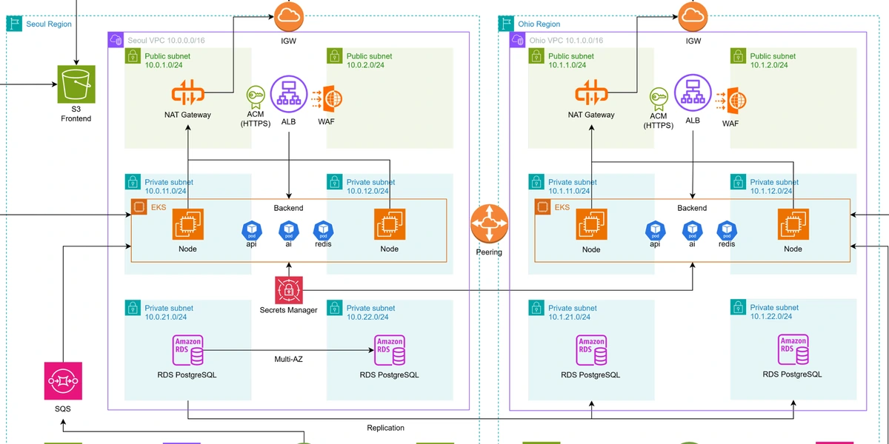

01
프로젝트
세 건 모두 실제 클라우드에 올려 동작을 확인했습니다. 카드를 누르면 설계에서 판단한 것과 막혔던 지점까지 볼 수 있습니다.
02
이력 · 기술
직접 다뤄본 것만 실었습니다. 막대는 숙련도 표기입니다.
학력 · 교육
- 서울AI스마트시티센터 — Claude 트랙AI 활용 개발·문서화 워크플로우
- 솔데스크 DevOps 과정AWS · Azure 기반 하이브리드 멀티클라우드 (11과목)
- 한성대학교 컴퓨터공학부 졸업학점 3.79 / 4.5
- 육군 병장 만기전역
자격증
- AWS Certified Solutions Architect – AssociateAmazon Web Services
- 리눅스마스터 2급한국정보통신인력개발센터
- 네트워크관리사 2급한국정보통신자격협회
- 정보처리기사한국산업인력공단
- 1종 보통 운전면허경찰청
기술 스택
Cloud
AWS
Azure
IaC
Terraform
CloudFormation
Container
Kubernetes
Karpenter
Helm
Docker
ESO
CI / CD
GitHub Actions
ArgoCD
Kustomize
Observability
Grafana
CloudWatch
Prometheus
AWS X-Ray
AI
Amazon Bedrock
pgvector
Database
PostgreSQL
Redis
MySQL
OS · Language
Linux
Python
Java
막대는 5단계 자가 평가입니다. 프로젝트에서 직접 맡은 범위는 각 상세 페이지의 담당 표에 ●/○로 구분해 두었습니다.